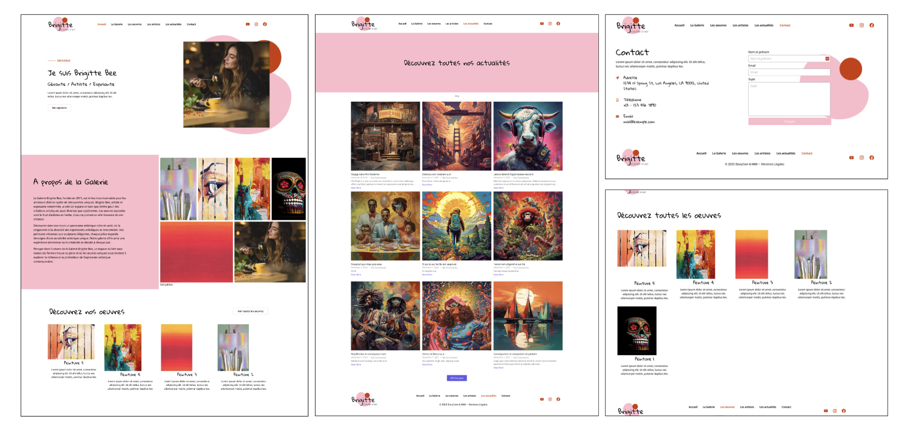

DÉVELOPPER
Site "Brigitte"

Ce projet a été réalisé individuellement au second semestre dans le cadre d’un cours de gestion de contenus. L’objectif était de reproduire fidèlement un site web à partir de maquettes réalisées sur Figma, représentant une galerie d’art fictive.
Le travail consistait à reconstruire exactement les pages proposées en utilisant WordPress et Local, puis à les personnaliser avec Elementor. L’objectif principal était de comprendre le fonctionnement d’un CMS en reproduisant une interface existante sans liberté de création.
Ce projet m’a permis de découvrir les bases de WordPress et de me familiariser avec son fonctionnement, notamment la création de pages et l’organisation des différents éléments. La principale difficulté a été de reproduire le plus fidèlement possible les maquettes fournies par le professeur, en respectant les espacements, les alignements, les dimensions et la mise en page. Ce travail m’a appris à être plus rigoureuse et attentive aux détails afin d’obtenir un rendu cohérent et conforme aux attentes
AC 14.06 : Déployer et personnaliser une application web en utilisant un CMS.